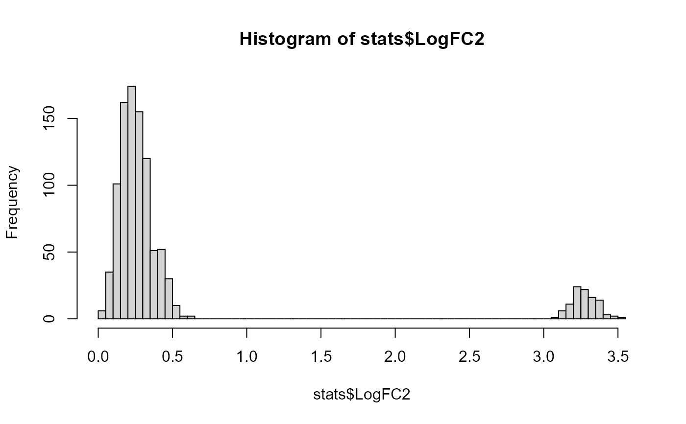

hashedDrops.RdDemultiplex cell barcodes into their samples of origin based on the most abundant hash tag oligo (HTO). Also identify potential doublets based on the presence of multiple significant HTOs.
hashedDrops(x, ...) # S4 method for ANY hashedDrops( x, ambient = NULL, min.prop = 0.05, pseudo.count = 5, constant.ambient = FALSE, doublet.nmads = 3, doublet.min = 2, doublet.mixture = FALSE, confident.nmads = 3, confident.min = 2, combinations = NULL ) # S4 method for SummarizedExperiment hashedDrops(x, ..., assay.type = "counts")
| x | A numeric/integer matrix-like object containing UMI counts. Rows correspond to HTOs and columns correspond to cell barcodes. Each barcode is assumed to correspond to a cell, i.e., cell calling is assumed to have already been performed. Alternatively, a SummarizedExperiment object containing such a matrix. |
|---|---|
| ... | For the generic, further arguments to pass to individual methods. For the SummarizedExperiment method, further arguments to pass to the ANY method. |
| ambient | A numeric vector of length equal to |
| min.prop | Numeric scalar to be used to infer the ambient profile when |
| pseudo.count | A numeric scalar specifying the minimum pseudo-count when computing log-fold changes. |
| constant.ambient | Logical scalar indicating whether a constant level of ambient contamination should be used to estimate |
| doublet.nmads | A numeric scalar specifying the number of median absolute deviations (MADs) to use to identify doublets. |
| doublet.min | A numeric scalar specifying the minimum threshold on the log-fold change to use to identify doublets. |
| doublet.mixture | Logical scalar indicating whether to use a 2-component mixture model to identify doublets. |
| confident.nmads | A numeric scalar specifying the number of MADs to use to identify confidently assigned singlets. |
| confident.min | A numeric scalar specifying the minimum threshold on the log-fold change to use to identify singlets. |
| combinations | An integer matrix specifying valid combinations of HTOs.
Each row corresponds to a single sample and specifies the indices of rows in |
| assay.type | Integer or string specifying the assay containing the count matrix. |
A DataFrame with one row per column of x, containing the following fields:
Total, integer specifying the total count across all HTOs for each barcode.
Best, integer specifying the HTO with the highest abundance for each barcode.
Second, integer specifying the HTO with the second-highest abundance.
LogFC, numeric containing the log-fold change between the abundances of the best and second-best HTO.
LogFC2, numeric containing the log-fold change in the second-best HTO over the ambient contamination.
Doublet, logical specifying whether a barcode is a doublet.
Confident, logical specifying whether a barcode is a confidently assigned singlet.
In addition, the metadata contains ambient, a numeric vector containing the (estimate of the) ambient profile;
doublet.threshold, the threshold applied to LogFC2 to identify doublets;
and confident.threshold, the threshold applied to non-doublet LogFC values to identify confident singlets.
If combinations is specified, Best instead specifies the sample (i.e., row index of combinations).
The interpretation of LogFC and LogFC2 are slightly different, and Second is not reported - see “Resolving combinatorial hashes”.
The idea behind cell hashing is that cells from the same sample are stained with reagent conjugated with a single HTO. Cells are mixed across multiple samples and subjected to droplet-based single-cell sequencing. Cell barcode libraries can then be demultiplexed into individual samples based on whether their unique HTO is detected.
We identify the sample of origin for each cell barcode as that corresponding to the most abundant HTO.
(See below for more details on exactly how “most abundant” is defined.)
The log-fold change between the largest and second-largest abundances is reported for each barcode (LogFC),
with large log-fold changes representing confident assignment to a single sample.
We also report the log-fold change of the second-most abundant HTO over the estimated level of ambient contamination (LogFC2),
with large log-fold changes indicating that a doublet is present.
To facilitate quality control, we explicitly identify problematic barcodes as outliers on the relevant metrics.
By default, we identify putative doublets as those with LogFC2 values that are
(i) doublet.nmads MADs above the median and (ii) greater than doublet.min.
The hard threshold is more-or-less arbitrary and aims to avoid overly aggressive detection
of large outliers in a naturally right-skewed distribution
(given that the log-fold changes are positive by definition, and most of the distribution is located near zero).
Alternatively, if doublet.mixture=TRUE, we fit a two-component mixture model to the LogFC2 distribution.
Doublets are identified as all members of the component with the larger mean.
This avoids the need for the arbitrary parameters mentioned above but only works when there are many doublets,
otherwise both components will be fitted to the non-doublet values.
(Initialization of the model assumes at least 5% doublets.)
Of the non-doublet libraries, we consider them to be confidently assigned to a single sample if their LogFC values are (i) not less than confident.nmads MADs below the median and (ii) greater than confident.min.
The hard threshold is again arbitrary, but this time it aims to avoid insufficiently aggressive outlier detection -
typically from an inflation of the MAD when the LogFC values are large, positive and highly variable.
This function assumes that cell calling has already been performed, e.g., with emptyDrops.
Specifically, x should only contain columns corresponding to non-empty droplets.
If empty droplets are included, their log-fold changes will simply reflect stochastic sampling in the ambient solution
and violate the assumptions involved in outlier detection.
If x contains columns for both empty and non-empty droplets,
it is straightforward to simply run emptyDrops on the HTO count matrix to identify the latter.
Note that some fiddling with the lower= argument may be required,
depending on the sequencing depth of the HTO libraries.
HTO abundances require some care to compute due to the presence of ambient contamination in each library. Ideally, the experiment would be performed in such a manner that the concentration of each HTO is the same. However, if one HTO is present at higher concentration in the ambient solution, this might incorrectly cause us to assign all barcodes to the corresponding sample.
To adjust for ambient contamination, we assume that the ambient contamination in each library follows the same profile as ambient.
We further assume that a minority of HTOs in a library are actually driven by the presence of cell(s), the rest coming from the ambient solution.
We estimate the level of ambient contamination in each barcode by scaling ambient, using a DESeq-like normalization algorithm to compute the scaling factor.
(The requisite assumption of a non-DE majority follows from the two assumptions above.)
We then subtract the scaled ambient proportions from the HTO count profile to remove the effect of contamination.
Abundances that would otherwise be negative are set to zero.
The scaling factor for each barcode is defined by computing ratios between the HTO counts and ambient, and taking the median across all HTOs.
However, this strict definition is only used when there are at least 5 HTOs being considered.
For experiments with 3-4 HTOs, we assume that higher-order multiplets are negligible and define the scaling factor as the third-largest ratio.
For experiments with only 2 HTOs, the second-most abundant HTO is always used to estimate the ambient contamination.
Ideally, ambient would be obtained from libraries that do not correspond to cell-containing droplets.
For example, we could get this information from the metadata of the emptyDrops output,
had we run emptyDrops on the HTO count matrix (see below).
Unfortunately, in some cases (e.g., public data), counts are provided for only the cell-containing barcodes.
If ambient=NULL, the profile is inferred from x using ambientProfileBimodal.
HTO abundances may be set to zero after subtracting the ambient noise. Thus, we need to add a pseudo-count to ensure that we can actually compute the log-fold changes described in “Value”.
For each barcode, we define the pseudo-count as the average ambient HTO count, i.e., the average of the scaled ambient for that barcode.
This is motivated by the assumption that the number of contaminating transcript molecules is roughly the same in each droplet,
such that any differences in ambient coverage between libraries reflect barcode-specific biases (capture efficiency, sequencing depth) that would also affect cell-derived HTO counts.
By using the average ambient count as the pseudo-count, we ensure that the shrinkage of the log-fold changes is not driven by the sequencing depth,
e.g., a constant pseudo-count would inflict greater shrinkage on libraries that have not been sequenced as deeply.
This avoids excessive variability in the log-fold change distribution that would otherwise reduce the precision of outlier detection.
Another nice aspect of this approach is that it collapses to a no-op if the experiment is well-executed with identical concentrations of all HTOs in the ambient solution.
(That said, we still enforce a minimum pseudo-count of pseudo.count if the average ambient count is lower than that,
simply to avoid highly variable log-fold changes when dealing with very low counts.)
Once the pseudo-count is added to the ambient-subtracted abundances, we compute the log-fold changes as described in “Value”.
LogFC is defined as the log-fold change in the most abundant HTO over the second-most abundant HTO.
LogFC2 is defined as the log-fold change in the second-most abundant HTO over the ambient contamination.
By default, the denominator for LogFC2 is set to the per-barcode average ambient count, equivalent to the pseudo-count used above.
This cancels out any variation in sequencing depth for more precise outlier calls.
If x has no more than two rows, LogFC2, Doublet and doublet.threshold are set to NA.
Strictly speaking, doublet detection is not possible as the second HTO is always used to estimate the ambient scaling and thus LogFC2 is always zero.
Confident calls are still available in the output of this function so assignment to the individual samples can still be performed.
In this scenario, the non-confident assignments are probably also doublets, though this cannot be said with much certainty.
To work around this limitation, we can set constant.ambient=TRUE,
which defines the denominator of each barcode's LogFC2 as the median of the per-barcode average ambient counts across all barcodes.
This is useful in scenarios where nrow(x) is too small and we cannot assume that the abundances of most HTOs are driven by ambient contamination.
By assuming most barcodes are not doublets, we can obtain a dataset-wide baseline for the ambient contamination to compute LogFC2.
The cost of this approach is that the log-fold changes will be more variable as sequencing depth is not cancelled out.
If x has no more than one row, Confident, LogFC and confident.threshold are set to NA.
Obviously, if there is only one HTO, the identity of the assigned sample is a foregone conclusion.
In some applications, samples are labelled with a combination of HTOs to enable achieve greater multiplexing throughput.
This is accommodated by passing combinations to specify the valid HTO combinations that were used for sample labelling.
Each row of combinations corresponds to a sample and should contain non-duplicated row indices of x corresponding to the HTOs used in that sample.
The calculation for the single-HTO case is then generalized for HTO combinations. The most important differences are that:
The reported LogFC is now the log-fold change between the \(n\)th most abundant HTO and the \(n+1\)th HTO,
where \(n\) is the number of HTOs in a valid combination.
This captures the drop-off in abundance beyond the expected number of HTOs.
The reported LogFC2 is now the log-fold change of the \(n+1\)th HTO over the ambient contamination.
This captures the high abundance of the more-than-expected number of HTOs when doublets are present.
Best no longer refers to the row index of x, but instead to the row index of combinations.
This may contain NA values if a particular combination of HTOs is observed but not present in the expected set.
Second is no longer reported as we cannot conveniently determine the identity of the second sample.
We also generalize the edge-case behavior when there are not enough HTOs to support doublet detection.
Consider that an inter-sample doublet may result in up to \(2n\) abundant HTOs.
Estimation of the scaling factor will attempt to avoid using the top \(2n\) ratios.
If nrow(x) is equal to or less than \(2n\), doublet statistics will not be reported at all,
i.e., Doublet and LogFC2 are set to NA.
This can be overcome by setting constant.ambient=TRUE as described above.
Stoeckius M, Zheng S, Houck-Loomis B et al. (2018) Cell Hashing with barcoded antibodies enables multiplexing and doublet detection for single cell genomics. Genome Biol. 19, 1:224
emptyDrops, to identify which barcodes are likely to contain cells.
Aaron Lun
# Mocking up an example dataset with 10 HTOs and 10% doublets. ncells <- 1000 nhto <- 10 y <- matrix(rpois(ncells*nhto, 50), nrow=nhto) true.sample <- sample(nhto, ncells, replace=TRUE) y[cbind(true.sample, seq_len(ncells))] <- 1000 ndoub <- ncells/10 next.sample <- (true.sample[1:ndoub] + 1) %% nrow(y) next.sample[next.sample==0] <- nrow(y) y[cbind(next.sample, seq_len(ndoub))] <- 500 # Computing hashing statistics. stats <- hashedDrops(y) # Doublets show up in the top-left, singlets in the bottom right. plot(stats$LogFC, stats$LogFC2)#> Mode FALSE TRUE #> logical 104 896#> Mode FALSE TRUE #> logical 900 100# Checking against the known truth, in this case # 'Best' contains the putative sample of origin. table(stats$Best, true.sample)#> true.sample #> 1 2 3 4 5 6 7 8 9 10 #> 1 114 0 0 0 0 0 0 0 0 0 #> 2 0 93 0 0 0 0 0 0 0 0 #> 3 0 0 97 0 0 0 0 0 0 0 #> 4 0 0 0 96 0 0 0 0 0 0 #> 5 0 0 0 0 110 0 0 0 0 0 #> 6 0 0 0 0 0 95 0 0 0 0 #> 7 0 0 0 0 0 0 102 0 0 0 #> 8 0 0 0 0 0 0 0 76 0 0 #> 9 0 0 0 0 0 0 0 0 112 0 #> 10 0 0 0 0 0 0 0 0 0 105